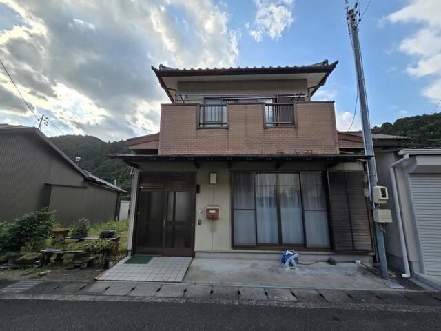
森町三倉の7DK木造2階建て｜価格200万円・作業小屋付き
静岡県周智郡森町三倉｜中古一戸建て｜土地約50坪・延床約46坪
200万円一般媒介／現況有姿／住宅ローン利用不可
- 7DK・全7室
- 1977年築・1997年増築
- 縁側と続き間の和室
- 2階にベランダ2か所
- 屋根付き作業小屋
- 浄化槽
- 都市計画区域外
先に結論
森町三倉の集落にある、築49年の木造2階建てです。価格は200万円。この価格は「現況のまま引き渡す」「引渡し後の不具合について売主が責任を負わない（契約不適合責任の免責）」「現金で買える方に限る」という3つの条件と引き換えになっています。手を入れながら使う前提で、山あいの静かな環境に週末や定年後の拠点を持ちたい方、二地域居住の受け皿を探している方に向きます。
反対に、住宅ローンを使いたい方、入居してすぐ快適に暮らせる状態を求める方、車なしで暮らしたい方には向きません。向き不向きがはっきりした物件なので、このページでは良い点と注意点を分けて書きます。
この家の特徴
間取りは7DK。1階に台所と6帖の和室居間、床の間付きの和室が2間続きで並び、2階に洋室1室と6帖の和室3間があります。和室はいずれも6帖で、襖を開ければ続き間として12帖に使えます。法事や親戚の集まり、仕事場や趣味の部屋づくりなど、部屋数を活かす使い方ができます。
押入と天袋、クローゼット、天井近くまでのシューズボックスなど収納が多いのも特徴です。窓が多く、廊下と階段には手すりが付いています。2階の和室からはベランダに出られ、物干し竿が付いた日当たりのよい場所から山並みを望めます。
敷地内には屋根付きの作業小屋があります。床はコンクリート敷きで、農機具や薪、アウトドア用品の収納、雨の日の作業場所として使えます。畑仕事や薪ストーブのある暮らしを考える方には、この小屋の価値が大きいはずです。
設備と建物の状態（正直に）
建物は昭和52年（1977年）の建築で、平成9年（1997年）に増築されています。築49年という年数のとおり、設備には経年劣化が見られます。特に洗面脱衣室の設備は改修を前提に考えてください。浴室はタイル張りの在来浴室で、ステンレス浴槽とサーモスタット混合水栓のシャワーが付いています。キッチンはステンレス天板の壁付け型で、吊戸棚と窓があります。トイレは小便器と洋式便器が別の個室で、洋式側に手すりがあります。
排水は浄化槽です。公共下水道ではないため、浄化槽の点検・清掃・法定検査という維持費が毎年かかります（森町の水道・下水道料金も参照）。給水の方式、浄化槽の人槽や維持管理記録、増築部分の登記の状況は、内覧の際に確認事項として一緒に見ます。
立地と暮らし｜三倉地区
三倉は森町の北部、太田川の上流域に広がる山あいの地区です。集落は前面道路に面して並び、周囲は山と茶畑と緑。この物件は「森林組合前（森町）」バス停から徒歩1分で、集落の中にあります。最寄り駅は天竜浜名湖鉄道の戸綿駅ですが徒歩113分（約9km）と遠く、生活は車が前提です。
買い物や通院は森町の中心部（森地区）へ車で出ることになります。冬の冷え込みや、大雨時の道路の状況、携帯電話の電波、ごみ収集の場所と曜日など、山あいの暮らしに固有の確認事項があります。三倉地区の暮らしガイドと森町のハザードマップを先に見てから内覧すると、現地で聞くことが具体的になります。
費用の考え方
物件価格200万円のほかに、登記費用（所有権移転登記の登録免許税と司法書士報酬）、不動産取得税、仲介手数料、火災保険料がかかります。価格が低い物件のため、諸費用の割合は相対的に大きくなります。仲介手数料は法定の上限内で、価格800万円以下の物件に適用される特例の範囲を含め、契約前に書面で説明します。
購入後は、毎年の固定資産税（森町の固定資産税の確認方法）、浄化槽の維持費、そして改修費です。水まわりの更新、屋根や外壁の補修、場合によっては耐震の検討（森町の木造住宅耐震助成）まで含めて、総額で何にいくら使えるかを先に決めておくと、価格の安さに引っ張られずに判断できます。
購入前に確認する順番
- 現金で買える総額を決める物件価格200万円＋諸費用＋当面の改修費の合計を、先に一つの数字にします。
- 電話で募集状況と内覧日を決める一般媒介のため、他社でも募集しています。最新の状況を電話で確認し、内覧は予約制です。
- 内覧で見る場所を決めておく屋根・外壁・雨染み・床のたわみ・給排水・浄化槽・作業小屋・敷地の境界・前面道路。写真を撮り、改修の見積りに使います。
- 登記と現況を照合する増築部分の登記、土地の公簿面積と現況、周辺の畑2筆が含まれないことを、宅建士とともに確認します。
- 残置物と引渡し時期を相談する残っている家財の扱いと引渡し時期は相談で決めます。希望は早めに伝えます。
- 重要事項説明を受けて契約する都市計画区域外、浄化槽、現況有姿、契約不適合責任の免責を含め、書面で説明を受けたうえで判断します。
写真で見る（16枚）
撮影は募集開始時のものです。現況と異なる場合は現況を優先します。
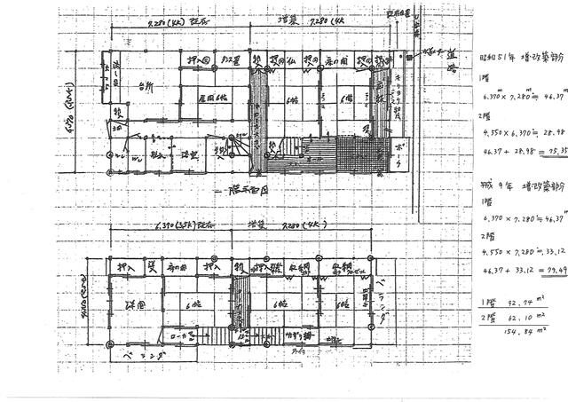
間取図1階は台所・居間と床の間付きの和室2間、2階は洋室と6帖の和室3間の全7室。押入・収納が多く、2階には2か所のベランダがあります。 外観森町三倉の山あいに建つ木造2階建て。土地約50坪・延床約46坪で、玄関前に駐車スペースがあります。 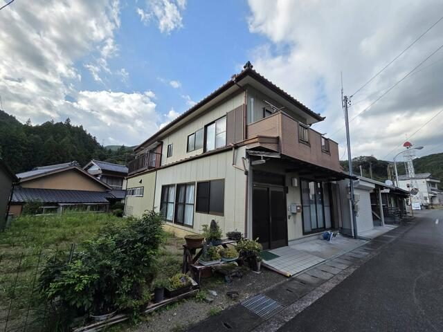
外観平成9年に増築された部分の外観。和瓦の屋根に窓が多く、2階に2か所のベランダを備えます。 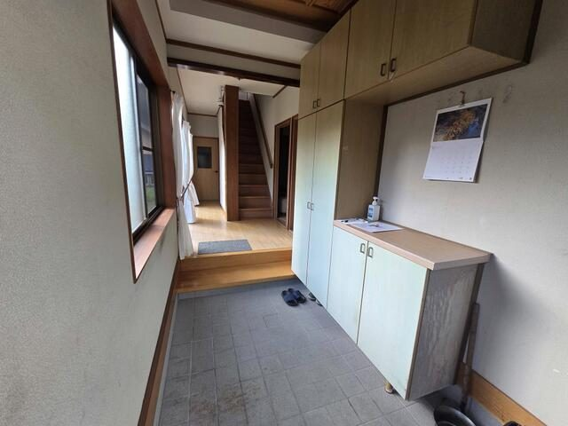
玄関天井近くまでの大容量シューズボックスを備えた玄関。正面に2階への階段とフローリングの廊下が続きます。 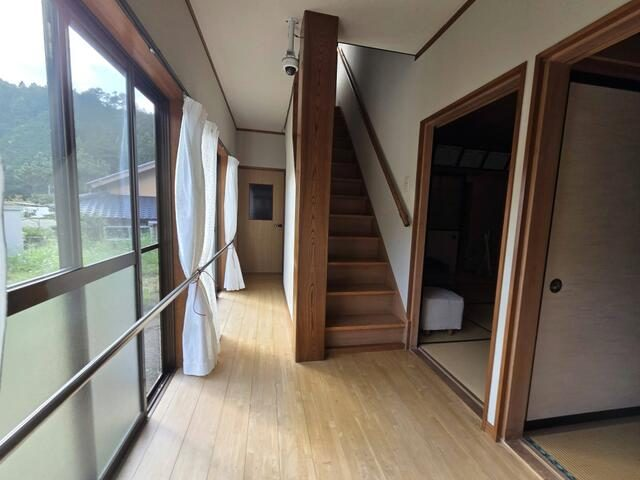
廊下大きな窓から光が入る廊下。窓沿いと階段に手すりが付いています。 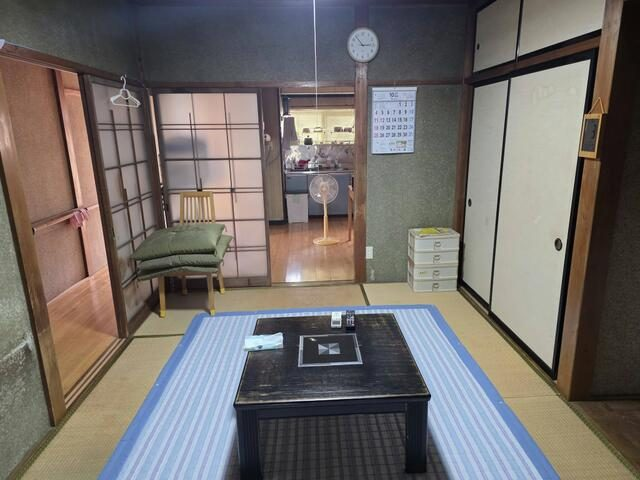
居間台所に隣接する6帖の和室居間。天袋付きの押入があり、廊下側は引き戸で仕切られています。 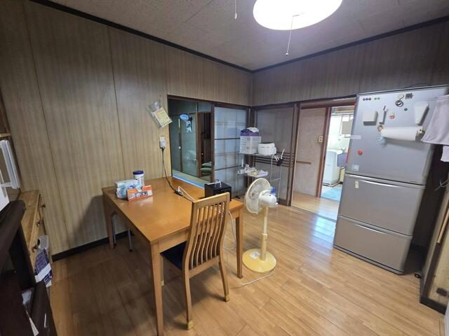
ダイニングキッチンフローリング敷きのダイニングキッチン。隣の和室居間とは引き戸でつながり、洗面脱衣室へも直接行けます。 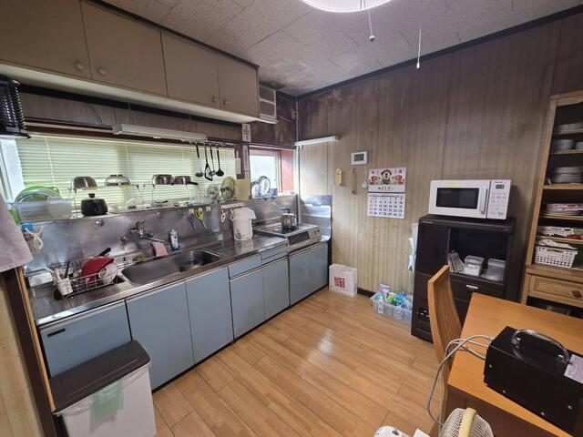
キッチンステンレス天板の壁付けキッチン。横長の作業台と上部の吊戸棚、シンク前に窓があります。 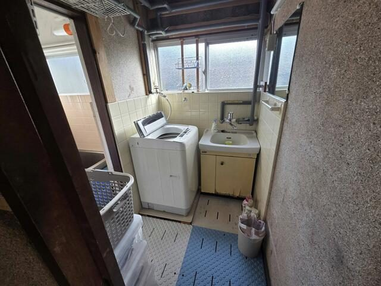
洗面脱衣室洗面台と室内洗濯機置場。浴室に隣接し窓があります。設備に経年劣化が見られ、改修を前提に検討してください。 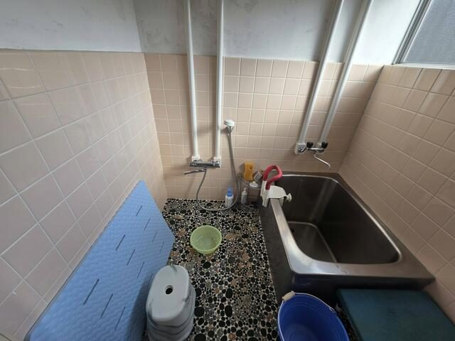
浴室タイル張りの在来浴室。ステンレス浴槽とサーモスタット混合水栓のシャワー、窓があります。 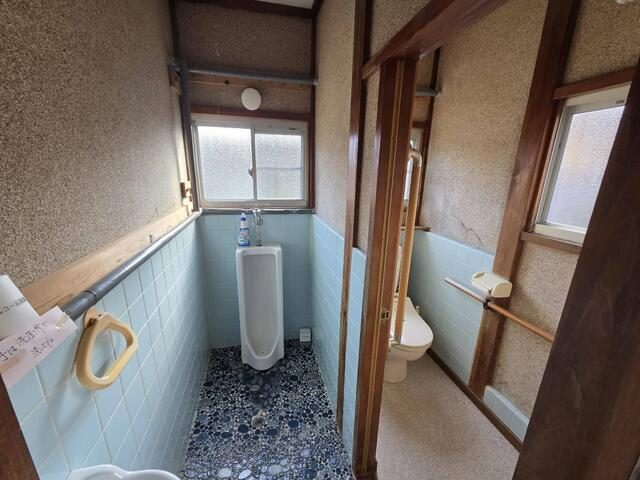
トイレ小便器と洋式便器を別々の個室に備えています。洋式側には手すり、各室に窓があります。 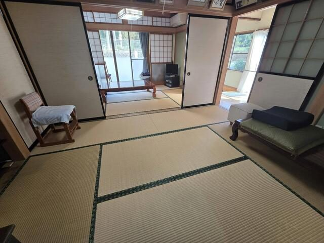
和室の続き間6帖の和室が二間続き。襖を開ければ12帖として使えます。大きな掃き出し窓と障子から光が入ります。 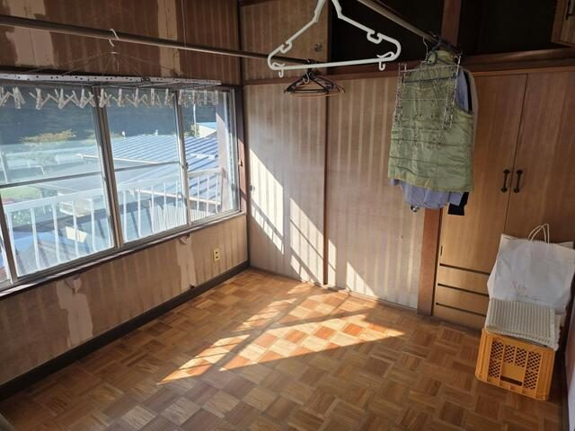
2階 階段上がり口大きな窓から日が差し込む2階の階段上がり口。窓の外にベランダが続きます。 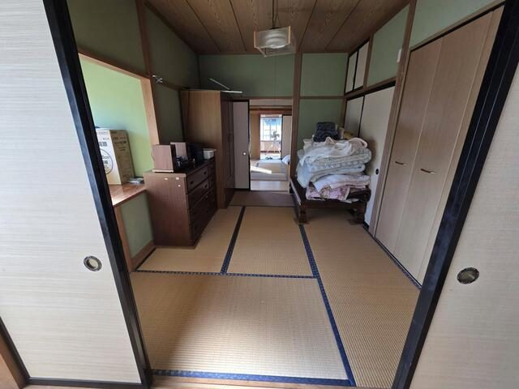
2階 和室木目の天井の6帖和室。隣の和室と襖で続き間になり、タンスなどを置ける板の間があります。 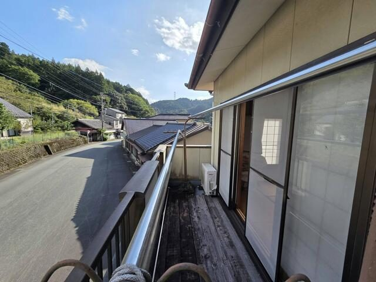
ベランダ2階の和室から出られるベランダ。物干し竿付きで、目の前に山々の緑が広がります。 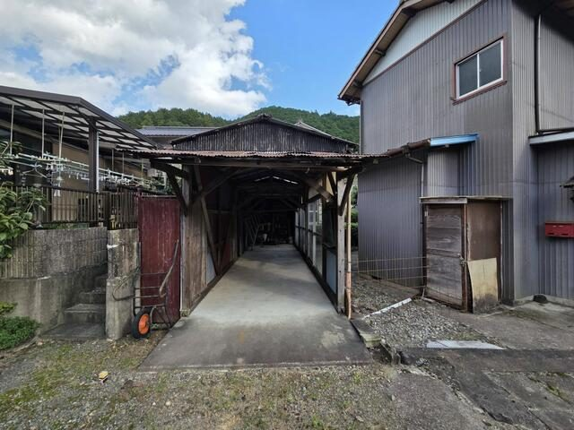
作業小屋敷地内の屋根付き作業小屋。床はコンクリート敷きで、農機具や薪、道具の収納に使えます。
物件概要
| 所在地 | 静岡県周智郡森町三倉 |
|---|---|
| 価格 | 200万円 |
| 物件種目 | 中古一戸建て |
| 間取り | 7DK（和6・6・6・6・6・6、洋室1） |
| 建物面積 | 154.84㎡（約46坪） |
| 土地面積 | 167.81㎡（約50坪・公簿売買） |
| 築年月 | 1977年4月（平成9年＝1997年に増築） |
| 構造・階数 | 木造2階建 |
| 交通 | 天竜浜名湖鉄道 戸綿駅 徒歩113分／バス25分「森林組合前（森町）」停歩1分 |
| 土地権利 | 所有権 |
| 地目 | 宅地 |
| 都市計画 | 都市計画区域外（用途地域・建ぺい率・容積率の指定なし） |
| 設備 | 浄化槽、電気。浴室に窓あり。縁側 |
| 駐車 | 玄関前に駐車スペース、屋根付き作業小屋あり |
| 現況 | 空家 |
| 引渡し | 相談（現況有姿） |
| 取引態様 | 一般媒介 |
| 物件番号 | 6992450809 |
備考：現況有姿での引渡し。建物は昭和52年建築（平成9年増築）のため契約不適合責任は免責。現金でご購入いただける方に限ります（住宅ローン等の融資利用不可）。土地は公簿売買。都市計画区域外。残置物の取扱い、引渡し時期は相談。周辺の畑2筆は本物件に含まれません。
お問い合わせ
富士ヶ丘サービス株式会社（磐田市見付）／9:00〜18:00、水曜定休。予約があれば時間外も対応します。
見学は予約制です。平日・土日とも、電話で日時を調整します。「森町ライフハックを見た」とお伝えいただくと話が早く進みます。成約済み・募集終了の場合は、同じ条件に近い森町の物件がないかも併せてお答えします。
※このご案内は、本サイト運営会社（富士ヶ丘サービス株式会社）の宅地建物取引業としてのサービスです。ご利用は任意で、森町の制度利用には影響しません。森町役場とは関係ありません。
よくある質問
住宅ローンは使えますか
使えません。この物件は現金でご購入いただける方に限ります（住宅ローン等の融資利用不可）。建物の築年と都市計画区域外という立地条件から、金融機関の担保評価が付きにくいためです。
「現況有姿」「契約不適合責任の免責」とはどういう意味ですか
現在の状態のまま引き渡し、引渡し後に見つかった雨漏りや設備の不具合などについて売主が修補や代金減額の責任を負わない、という条件です。価格200万円はこの条件を前提にしています。内覧時に気になる点は遠慮なく確認してください。
残っている家具や荷物はどうなりますか
残置物の取扱いは相談のうえ決めます。引渡し時期も相談可能です。希望を早めにお伝えください。
周りの畑も一緒に買えますか
周辺の畑2筆は本物件に含まれません。農地の取得には農地法の手続きが別に必要で、本物件の売買とは切り離して考えます。
車がなくても暮らせますか
難しいと考えてください。最寄りの天竜浜名湖鉄道 戸綿駅まで徒歩113分（約9km）、バスは森林組合前停歩1分ですが本数は限られます。日常の買い物や通院は車が前提です。
あわせて読む
掲載者（宅地建物取引業者）の表示
情報公開日：2026年10月3日／次回更新予定日：2026年10月17日（アットホーム掲載情報に基づく）
商号：富士ヶ丘サービス株式会社
宅地建物取引業免許：静岡県知事（2）第14083号
所属団体：（公社）全日本不動産協会 会員／東海不動産公正取引協議会 加盟
所在地：〒438-0086 静岡県磐田市見付5789-1（磐田市見付加茂川の交差点東側）
電話：0538-31-3308（9:00〜18:00、水曜定休。予約があれば時間外も対応）
代表取締役・宅地建物取引士：大石浩之
最終確認日：2026-10-04 ／ 価格・募集状況は変わります。お問い合わせ時点の最新情報を優先してください。